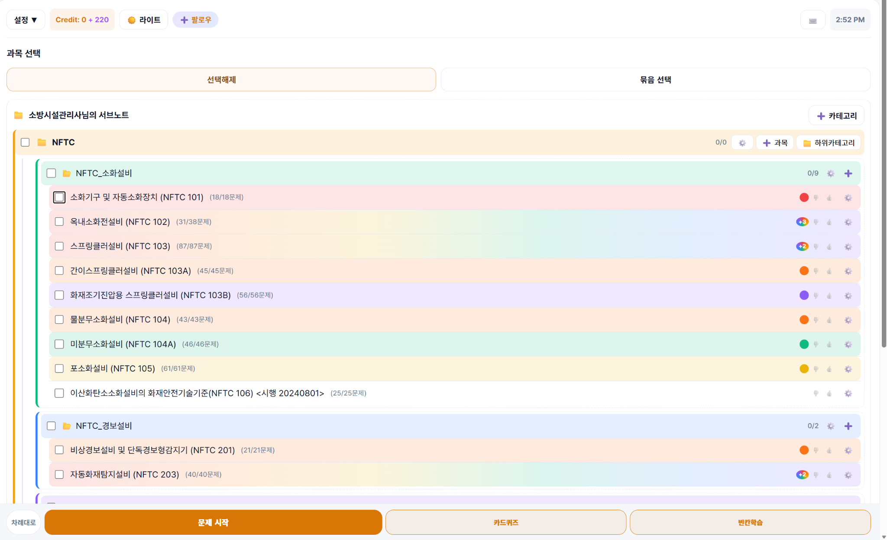
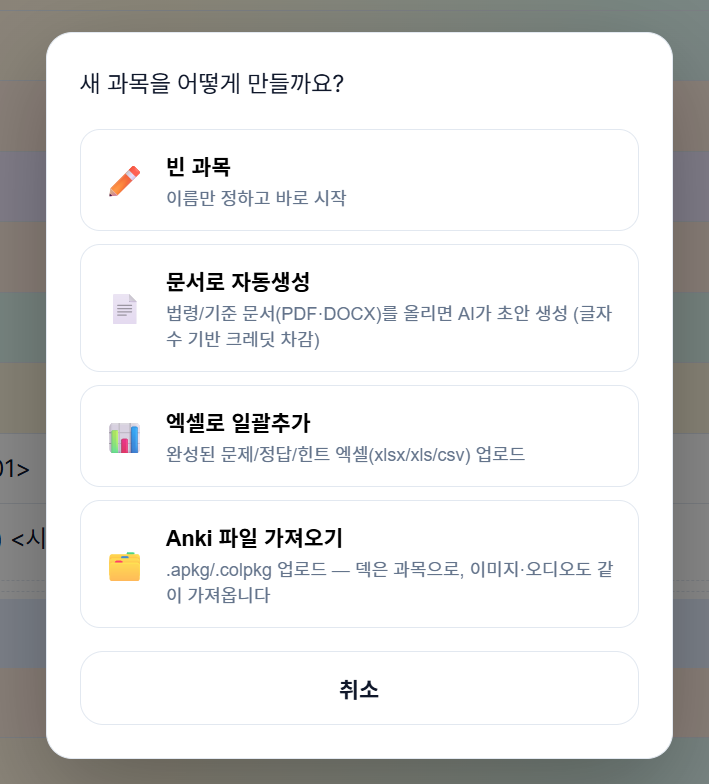

출시 준비 중마이서브노트는 현재 출시를 준비하고 있습니다. 정식 출시 소식은 문의처로 연락해주시면 안내해드리겠습니다.
MY SUB NOTE
공부에 필요한 모든것을
한곳에 모으다
공부 자료는 한곳에, 학습 방법은 내 방식대로.
문제·정답·힌트·이미지·스케치·오디오를 정리하고 다양한 방식으로 반복 학습하세요.
디지털 단권화 · 직접 쓰기 · 카드 · 빈칸 · 스케치 · 오디오 · AI 채점

CORE
모으고, 학습하고, 기억할 때까지 반복합니다.
마이서브노트의 중심은 한곳에 정리한 학습자료를 상황과 목적에 맞게 계속 꺼내보는 것입니다.
1
한곳에 모으기
문제·정답·힌트·이미지·스케치·오디오를 과목별로 한곳에 정리합니다.
2
나에게 맞게 학습하기
직접 쓰기, 카드, 빈칸, 스케치, 오디오 등 상황에 맞는 방식으로 학습합니다.
3
기억할 때까지 반복하기
중요도 필터, 랜덤·순차, 과목 묶음으로 반복 범위와 우선순위를 직접 설계합니다.
STUDY MODES
하나의 노트, 여러 가지 학습 방법
앉아서 공부할 때와 이동할 때, 빠르게 훑을 때와 직접 써볼 때 필요한 방식은 다릅니다.
직접 쓰기정답을 보지 않고 직접 써보는 출력 학습
카드학습목록형으로 빠르게 훑고, 카드형으로 한 문제씩 반복
빈칸학습핵심어를 가리고 반복해서 떠올리기
스케치두들링·기호·그림으로 기억 연결하기
오디오이동·운동 중에도 문제와 힌트 상기하기
CREATE & IMPORT
처음부터 만들어도,
기존 자료를 가져와도 됩니다.
빈 과목으로 직접 시작하거나 문서 자동생성, Excel 일괄추가, Anki 가져오기를 이용할 수 있습니다.
- PDF·DOCX·법령 자료에서 문제 초안 생성
- 완성된 문제를 Excel로 일괄 등록
- Anki의 덱·이미지·오디오 자료 가져오기

정리 → 문제화 → 인출 → 확인 → 반복
읽는 것에서 끝나지 않고, 떠올리고 확인하며 기억할 때까지 이어지는 공부 루틴을 만드세요.
PRICING
필요한 만큼, 부담 없이.
구독 등급에 관계없이 카드·빈칸·스케치·오디오 등 기본 학습 기능을 사용할 수 있습니다.
체험
처음 시작하는 분께
₩0 최초 1회
50 크레딧
- 카드·빈칸·스케치·오디오 등 기본 학습 기능
- 최대 생성 문제 50문제
- 셔플 반복재생 제외
베이직
부담 없이 시작하는 기본 플랜
₩3,900 / 30일
300 구독 크레딧 (30일마다 갱신)
최초 전환 시 웰컴보너스 200 크레딧
최초 전환 시 웰컴보너스 200 크레딧
- 카드·빈칸·스케치·오디오 등 기본 학습 기능
- 문제 생성 제한 없이 이용
- 셔플 반복재생 이용 가능
BEST · 크레딧당 약 43% 절약
넉넉한 크레딧과 고급 음성
₩8,900 / 30일
1,200 구독 크레딧 (30일마다 갱신)
최초 전환 시 웰컴보너스 300 크레딧
최초 전환 시 웰컴보너스 300 크레딧
- 베이직의 모든 기능
- 베이직 대비 크레딧당 약 43% 저렴
- Chirp 3 HD 고급 음성 지원
START
나만의 공부를 마이서브노트에 모아보세요.
공부 자료는 한곳에, 학습 방법은 내 방식대로.